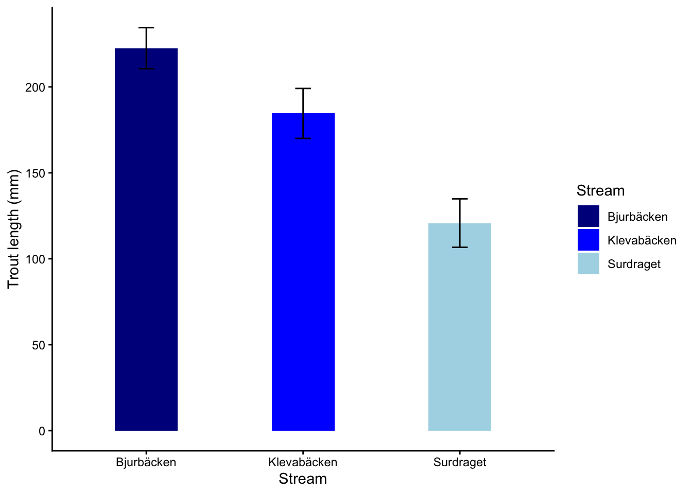

Code
trout_data <- read.table("data/trout_stream.txt",
header=T,
sep="\t",
dec=",") Anova står för Analysis of Variance och är en samling statistiska metoder som analyserar hur den totala variansen i datat fördelar sig inom och mellan grupper. Metoden är mycket flexibel och kan användas för såväl en som flera faktorer, och de kan vara såväl diskreta (med flera nivåer) som kontinuerliga. Vi kommer att börja med envägs-ANOVA som hanterar en faktor.
Envägs ANOVA används för att undersöka om två eller flera nivåer av en faktor skiljer sig i medelvärde. För två nivåer (exempelvis hur två arter skiljer sig i storlek) är modellen en direkt ersättning för t-testet, men till skillnad från t-testet kan man testa fler nivåer (exempelvis hur 3+ arter skiljer sig i storlek).
En ANOVA förutsätter följande
att residualerna är normalfördelade
att varianserna är homogena
Notera att det är residualerna och inte rådatat som skall vara normalfördelat.
Vi har elfiskat i tre bäckar, och vill undersöka om öringarnas storlek skiljer sig åt mellan de tre bäckarna.
Ladda ner följande fil trout_stream.txt (högerklicka, välj “spara länk som”) och spara filen på din hårddisk i en mapp med ett lämpligt namn.
Fortsätt med att läsa in datasetet och ge det ett namn, i det här fallet kallar vi det trout_data En detalerad beskrivning i hur man läser in filer finns i vår tidigare tutorial Läsa in data i R.
Glöm inte att dokumentera din kod i ett script, med kommentarer som förklarar vad du gör! Se vår tutorial om script om du behöver påminnelse om hur man skapar och använder script.
Börja med att titta på datans struktur med str().
'data.frame': 18 obs. of 2 variables:
$ Stream : chr "Klevabacken" "Klevabacken" "Klevabacken" "Klevabacken" ...
$ Trout.length: num 231 136 176 158 190 ...$ Stream: chr betyder att värderna i kolumnen Stream är karaktärer dvs text och inte siffror.
$ Trout.length: num betyder att värderna i kolumnen Trout.length är decimaltal
Visa sedan de fem första raderna av ditt dataset med head() för att se att allt ser korrekt ut
Vi gör en enkel graf med boxplot()
Den grå boxen innehåller de mittersta 50% av värderna i gruppen, och den horisontella linjen i mitten visar medianvärdet. Felstaplarna visar området som de 25% lägsta och 25% högsta värderna ligger i.
Observera: en boxplot är INTE ett statistiskt test, och det motsvarar inte medelvärden och varians/standard error. Använd det enbart för snabb inspektion av data, inte för publicering. Vi går igenom hur man gör en publiceringsduglig graf i den avslutande delen av vår tutorial, under Publiceringsduglig figur
Hur tolkar du grafen? Skiljer sig öringarna från de tre bäckarna åt i storlek, eller är det någon bäck som avviker från de andra?
Vi vill nu göra en envägs ANOVA för att undersöka om vår responsvariabel (beroende variabel) Trout.length beror av vår förklarande variabel (oberoende variabel) Stream, med andra ord om öringarnas storlek är olika i de olika bäckarna.
Vi specificerar en modell med hjälp av funktionen lm() som står för linjär modell och väljer att spara resultatet i ett objekt som vi kallar m.trout. Jag föredrar att alla mina modeller (resultat av statistka test) har ett namn som börjar med m. för att jag skall veta vad som är dataset och vad som är modeller. Ge alltid dina modeller beskrivande namn.
I vår modell har vi vår responsvariabel (det vi har på y-axeln) till vänster om tilde-tecknet ~ och vår förklarande variabel till höger. data = trout_data betyder att vi använder oss av datasetet vi tidigare döpt till trout_data.
Vi tittar på resultatet genom att använda funktionen anova() med modellns namn.
Analysis of Variance Table
Response: Trout.length
Df Sum Sq Mean Sq F value Pr(>F)
Stream 2 31727 15863.7 14.353 0.0003286 ***
Residuals 15 16579 1105.3
---
Signif. codes: 0 '***' 0.001 '**' 0.01 '*' 0.05 '.' 0.1 ' ' 1Vi kan nu inspektera resultatet. Vi får teststatistika (F-värde) samt två frihetsgrader (Df) och ett p-värde (kallas Pr(>F)).
Eftersom vårt p-värde är mindre än 0.05 kan vi dra slutsatsen att öringarnas storlek är skiljt mellan bäckarna.
Hade vi bara haft två nivåer av vår faktor (dvs två bäckar) så hade vi nu vetat att öringarna i de två bäckarna skiljer sig i storlek. Men vi har ju tre bäckar! Skiljer sig öringarna i storlek mellan alla bäckar, eller bara mellan några? Det vet vi inte än, vi måste gå vidare för att testa det, vilket vi gör med ett post-hoc test.
Om din övergripande faktor (Stream i det här exemplet) är signifikant skall man fortsätta med ett post-hoc test. Post-hoc testet gör som standard parvisa jämförelser mellan nivåerna av din signifikanta faktor, och justerar p-värderna för multipla tester (gör man många tester så är det sannolikt att man får en signifikant jämförelse av ren slump).
Det finns många olika post-hoc tester, men en mycket vanlig är den som kallas Tukey’s HSD ( där HSD står för Honest Significant Difference), den används generellt när man vill jämföra alla olika nivåer av din signifikanta faktor (dvs jämföra alla bäckar) och har lika antal replikat i de olika nivåerna (vi har provtagit samma antal öringar i varje bäck).
För att kunna göra Tukey’s HSD använder vi oss av paketet emmeans. Om du inte sedan tidigare har paketet installerat så gör du det med koden install.packages("emmeans"). Innan du använder paketet behöver du läsa in det i din session i R genom funktionen library()
Vi använder oss av funktionen emmeans() i paketet med samma namn.
Welcome to emmeans.
Caution: You lose important information if you filter this package's results.
See '? untidy'Om vi inspekterar vår kod emmeans (m.trout, pairwise ~ Stream) så anger vi först namnet på den statistiska modell som vi gjort när vi genomförde vår ANOVA, dvs m.trout. Sedan anger vi att vi vill göra parvisa jämförelser mellan våra bäckar, genom att ange pairwise ~ Stream.
Vi skriver in namnet på vår post-hoc analys och kör koden
$emmeans
Stream emmean SE df lower.CL upper.CL
Bjurbacken 223 13.6 15 193.6 251
Klevabacken 185 13.6 15 155.6 213
Surdraget 121 13.6 15 91.8 150
Confidence level used: 0.95
$contrasts
contrast estimate SE df t.ratio p.value
Bjurbacken - Klevabacken 38.0 19.2 15 1.977 0.1522
Bjurbacken - Surdraget 101.8 19.2 15 5.301 0.0002
Klevabacken - Surdraget 63.8 19.2 15 3.324 0.0121
P value adjustment: tukey method for comparing a family of 3 estimates Vi får fram våra resultat av post-hoc analysen. Under rubriken $emmeans ser vi de skattade medelvärderna samt standard error (SE) och konfidensintervall (CL) för öringarnas längd i de olika bäckarna.
Under rubriken $contrasts får vi sedan våra parvisa test, det är parvisa t-test med Tukey’s metod för att korrigera p-värden för multipla test. Vi tittar på resultatet rad för rad.
Bjurbacken - Klevabacken har ett p-värde på0.1522. Det betyder att öringarnas längd inte skiljer sig mellan Bjurbäcken och Klevabäcken. Den skillnaden vi ändå kan se i medelvärden under rubriken $emmeans är alltså inte signifikant.
Bjurbacken - Surdraget har ett p-värde på0.0002. Det betyder att öringarnas längd skiljer sig mellan Bjurbäcken och Surdraget. Vi ser under rubriken $emmeans att öringarna är större i Bjurbäcken (223 mm) än i Surdraget (121 mm).
Klevabacken - Surdraget har ett p-värde på0.0121. Det betyder att öringarnas längd skiljer sig mellan Bjurbäcken och Klevabäcken.Vi ser under rubriken $emmeans att öringarna är större i Klevabäcken (185 mm) än i Surdraget (121 mm).
Öringarnas storlek skiljer sig mellan bäckarna (envägs ANOVA, F = 14.353, d.f. = 2 och 15, p < 0.001). Post-hoc test visar att öringarna i Surdraget är minst, och deras storlek skiljer sig signifikant från öringarna i Bjurbäcken (t = 5.301, d.f. = 15, p < 0.001) och Klevabäcken (t = 3.324, d.f. = 15, p = 0.012) medan öringarna i Bjurbäcken och Klevabäcken inte signifikant skiljer sig i storlek (t = 1.977, d.f. = 15, p = 0.152).
Var modellen lämplig att använda för ditt dataset?
Vi utvärderar modellen genom diagnostiska grafer genom att använda funktionen plot() på vår statistiska modell.
Vi får fyra grafer att utvärdera, de två första är viktigast. Du kan behöva trycka upprepade gånger på ENTER för att se alla graferna (i R kommer de en och en).
Residuals vs Fitted bör visa en hyfsat rak linje. Den visar hur mycket residualerna (skillnaden mellan dina data och de predikterade värderna) förändras med ökat värde på y-axeln. Residualerna motsvaras av cirklar i grafen. Om du har ett mönster i avvikelserna så betyder det att modellen inta är optimal för dina data.
Normal Q-Q visar om residualerna är normalfördelade. De bör följa den diagonala streckade linjen. Om de avviker på ett systematiskt sätt är residualerna inte perfekt normalfördelade, och vi kan behöva förändra modellen, exempelvis genom att transformera data.
Scale-Location illustrerar om variationen i datat är lika över alla värden. Om variationen ökar mycket åt höger (ett vanligt fall) så har vi större variation vid högre värden. Kan lösas genom att transformera data.
Residuals vs Leverage används för att hitta extremvärden som har onormalt stor påverkan på regressionslinjen. Mönstret i grafen är inte intressant, vi letar efter värden som ligger utanför de grå linjerna, speciellt linjerna för 1. Man bör dubbelkolla sådana värden (outliers) och fundera på om de skall vara med i datasetet. Kanske analysera såväl med som utan extremvärderna?
Vi avslutar med att göra en publiceringsduglig figur, och använder oss av paketet ggplot2. Om du inte sedan tidigare har paketet installerat så gör du det med koden install.packages("ggplot2"). Innan du använder paketet behöver du läsa in det i din session i R genom funktionen library()
Koden bygger helt på den vi lärde oss under vår tutorial för t-test, och förklaras inte närmare här.
Det blev en bra start, men vi kan fixa ytterligare med den.
Vi vill ha bättre namn på vår y-axel, fixas med ylab()
Vi vill välja andra färger, och dessutom vill vi ha savenska namn med å, ä och ö för våra bäckar. Fixas med scale_fill_manual()
library(ggplot2)
plot.trout.final <- ggplot(trout_data, aes(x = Stream, y = Trout.length, fill = Stream)) +
stat_summary(geom = "bar", fun = mean, width = 0.4) +
stat_summary(geom = "errorbar", fun.data = mean_se, width = 0.1) +
ylab("Trout length (mm)")+
scale_fill_manual(values = c("Bjurbacken" = "darkblue", "Klevabacken" = "blue", Surdraget = "lightblue"), labels = c("Bjurbäcken", "Klevabäcken", "Surdraget"))+
scale_x_discrete(
labels = c("Bjurbacken" = "Bjurbäcken",
"Klevabacken" = "Klevabäcken",
"Surdraget" = "Surdraget")) +
theme_classic()
plot.trout.final
Funktionen scale_fill_manual() justerar färger med values och namnen i legenden med labels. Våra förändringar i legenden påverkar dock inte vad som skrivs under våra staplar på x-axeln, då de komemr från vårt dataset. Vi behöver ytterliga en kod, scale_x_discrete(), där vi förklarar hur översättningarna på x-axlen skall se ut. Det är ganska vanligt att man har korta namn på sina olika nivåer av sin faktor (för att få mer lättläst och lättskriven kod, samt undvika specialtecken som kan skapa kompabilitetsproblem) och sedan fyller i det fullständiga namnet eller korrekta stavningen i grafen.